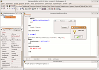
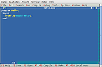

Free Pascal
Dieser Artikel wurde für die folgenden Ubuntu-Versionen getestet:
Ubuntu 14.04 Trusty Tahr
Zum Verständnis dieses Artikels sind folgende Seiten hilfreich:
Free Pascal ist eine freie und quelloffene Implementation der Programmiersprache Pascal. Neben der Verfügbarkeit auf zahlreichen Plattformen und Betriebssystemen werden auch eine ganze Reihe von Komponenten mitgeliefert, die aufgrund der wenig restriktiven GNU LGPL Lizenz  selbst in kommerziellen Produkten frei verwendet werden können.
selbst in kommerziellen Produkten frei verwendet werden können.
Installation¶
Free Pascal befindet sich in den Ubuntu-Paketquellen. Folgendes Paket muss installiert [1] werden:
fp-compiler (universe [2])
 mit apturl
mit apturl
Paketliste zum Kopieren:
sudo apt-get install fp-compiler
sudo aptitude install fp-compiler
Eine Entwicklungsumgebung mit Textoberfläche erhält man nach der Installation des Paketes:
fp-ide (universe )
mit apturl
Paketliste zum Kopieren:
sudo apt-get install fp-ide
sudo aptitude install fp-ide
Benutzung¶
Hallo Welt¶
Üblicherweise verwendet man zum Testen und zum Einstieg ein simples Test-Programm, dass lediglich eine kurze Meldung im Terminal ausgibt. Dafür öffnet man einen Editor [3] und fügt folgenden Inhalt ein:
1 2 3 4 5 | program Hallo; begin writeln('Hallo Welt'); end. |
und speichert die Datei als hallo.pas ab. Zum Kompilieren (Übersetzen) des Quelltextes wird nun ein Terminal geöffnet [4] und folgender Befehl eingeben:
fpc hallo.pas
Das Programm kann man anschließend im Terminal mit folgendem Befehl ausführen:
./hallo
Entwicklungsumgebung¶
Entwicklungsumgebungen haben im Vergleich zu einfachen Texteditoren den Vorteil, dass man von ihnen heraus die Programme per Tastendruck übersetzen und ausführen kann, sowie bei Syntaxfehlern sofort passende Fehlermeldungen und Hilfe erhält.

Lazarus¶
Wer möchte kann mit einer vollständigen grafischen Oberfläche namens Lazarus arbeiten. Sie bietet zusätzlich eine visuelle Programmierumgebung mit der mit wenigen Klicks eine grafische Oberflächen erstellt werden kann und erinnert an das kommerzielle Borland Delphi für Windows. Die Komponentenbibliothek unterstützt eine ganze Reihe von GUI-Toolkits und ermöglicht unter anderem die einfache Kontaktaufnahme zu Datenbanken.
Textoberfläche¶
Um die Free Pascal Entwicklungsumgebung zu starten kann man ein Terminal öffnen [4] und folgenden Befehl eingeben:
fp
Man findet sich in einer Textoberfläche wieder, die sich größtenteils mit der Tastatur steuern lässt. Die wichtigsten Abkürzungen laufen über die Funktionstasten oder mit Alt + den hervorgehobenen Buchstaben. Die Tastenkombinationen des Terminalfensters und der Free Pascal-IDE können sich überschneiden, daher ist es sinnvoll die Tastenkürzel in den Einstellungen der Terminalemulation zu deaktivieren.

Auch hier kann einmal "Hallo Welt" ausprobiert werden. Das Programm lässt sich mit Alt + C -> Compile übersetzen und anschließend mit Alt + R -> Run ausführen. Vorher wird man noch aufgefordert das Programm zu speichern. Mit Tab ⇆ , den Pfeiltasten und ⏎ kann man sich gegebenfalls durch das Dialogfenster des Speicherdialogs manövrieren.

- Erstellt mit Inyoka
-
 2004 – 2017 ubuntuusers.de • Einige Rechte vorbehalten
2004 – 2017 ubuntuusers.de • Einige Rechte vorbehalten
Lizenz • Kontakt • Datenschutz • Impressum • Serverstatus -
Serverhousing gespendet von